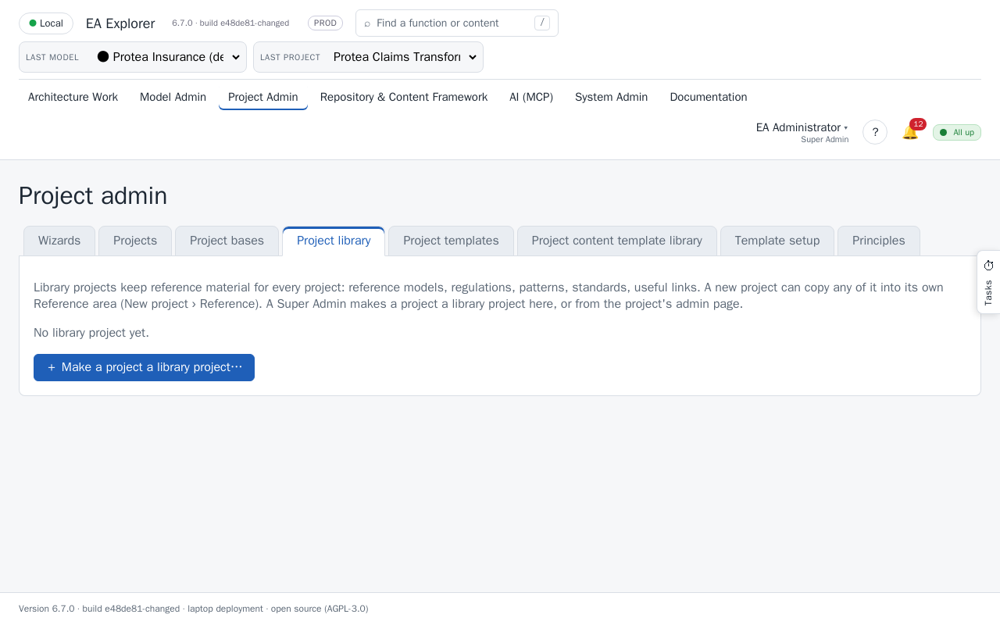

Make a library project
For: Project Admin
A project others copy content from when they start.

#/project-admin/libprojectsWhy do this
A library project holds content worth reusing: an organisation's standard principles, deliverables or set-up. Making a project a library project lets new projects copy from it.
A project carries one pass of the ADM from vision to sign-off. Each task here is one of the steps along that route, and the project keeps them together so the whole story can be read later.
In TOGAF terms: The ADM itself: the phases, steps, deliverables and sign-offs of an architecture project. See EA Explorer and the TOGAF Standard.
The goal: Other projects can start from this one's content.
Before you start You need the Library Admin role.
Steps
- Open Project Admin › Project library, Make a project a library project.
- Pick the project; give the library name; Make.
- To stop it later: no longer a library project, with a reason.